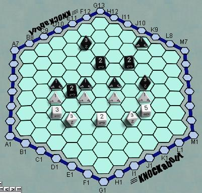

Knockabout
Knockabout это стратегическая игра похожая на шахматы, вместо фигур
используются игральные кости на шестиугольном поле со стороной 7.
Кость обычно определяет силу хода, но если в результате хода наступает
цепная реакция, то последняя кость в конце хода бросается снова.
Элемент случайности ограничен ровно настолько чтобы сделать игру
интересной без доминирования в итоговом результате.
Цель игры состоит в том, чтобы вытолкнуть фигуры противника в "канаву"
на внешней границе поля. Кости ходят на расстояние равное выпавшему
на них значению, и вызывают цепную реакцию (как шары в бильярде) если
их пути пересекаются. В этом случае последняя кость в цепочке бросается
снова. Подробности вы можете прочесть официальных правилах.
Боты: Dumbot сильный противник,
но отнюдь не звезда.
|

|